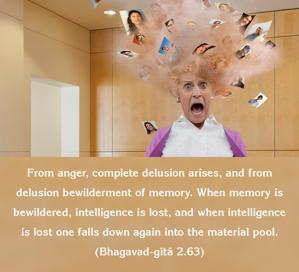
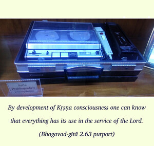
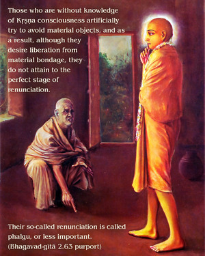
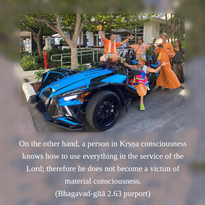
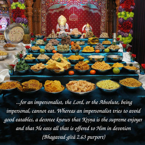
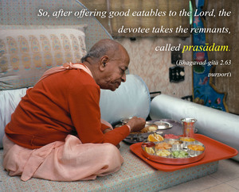
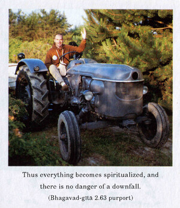

From anger, complete delusion arises, and from delusion bewilderment of memory. When memory is bewildered, intelligence is lost, and when intelligence is lost one falls down again into the material pool.







Śrīla Rūpa Gosvāmī has given us this direction:
prāpañcikatayā buddhyā
hari-sambandhi-vastunaḥ
mumukṣubhiḥ parityāgo
vairāgyaṁ phalgu kathyate
(Bhakti-rasāmṛta-sindhu 1.2.258)
By development of Kṛṣṇa consciousness one can know that everything has its use in the service of the Lord. Those who are without knowledge of Kṛṣṇa consciousness artificially try to avoid material objects, and as a result, although they desire liberation from material bondage, they do not attain to the perfect stage of renunciation. Their so-called renunciation is called phalgu, or less important. On the other hand, a person in Kṛṣṇa consciousness knows how to use everything in the service of the Lord; therefore he does not become a victim of material consciousness. For example, for an impersonalist, the Lord, or the Absolute, being impersonal, cannot eat. Whereas an impersonalist tries to avoid good eatables, a devotee knows that Kṛṣṇa is the supreme enjoyer and that He eats all that is offered to Him in devotion. So, after offering good eatables to the Lord, the devotee takes the remnants, called prasādam. Thus everything becomes spiritualized, and there is no danger of a downfall. The devotee takes prasādam in Kṛṣṇa consciousness, whereas the nondevotee rejects it as material. The impersonalist, therefore, cannot enjoy life, due to his artificial renunciation; and for this reason, a slight agitation of the mind pulls him down again into the pool of material existence. It is said that such a soul, even though rising up to the point of liberation, falls down again due to his not having support in devotional service.